部隊のしくみ
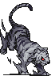
白虎赤
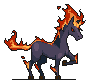
スレイプニル赤
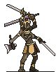
阿修羅赤
枠は3つ
1部隊はモンスター3体。ここが編成のすべて。
HPと防御は合算
3体のHPと防御力は合算して1つとして扱う。
色は多数決
部隊の属性は3体の多数決で決まる。3色では編成できない（太陽タロットを除く）。
編成の三か条
第一条
重複不可の能力は1体まで
重複不可の能力は2体以上入れても効果が増えない。さらにその能力を持つモンスターはステータスが低めに設定されている。ゲーム内では重複不可の能力だけ枠が六角形（角ばった形）で表示されるので、それを目印にできる。
甲殻＋甲殻2体目は効果が乗らない
第二条
方向性を決める
速度・防御・攻撃・クリティカルなど、どれか1つに寄せた部隊が強い。基本はタロットに応じて決定。スキルも選びやすくなる（迅速・猛攻・鉄壁）。能力同士の相乗効果も狙える（攻撃力上昇と威圧）。
速度防御攻撃クリティカルなど第三条
規模が上のモンスターを使う
モンスターには規模と施設の解放条件がある。集落→村落→村落施設→宿場町→宿場町施設→街→街施設と段階が上がり、上ほどHPと攻撃力が高い。使えるなら上の段階に乗り換える。ただし街の最上位のドラゴンはコストが跳ね上がるので鉱石と相談。
集落村落村落施設宿場町宿場町施設街街施設
タイプ別 Tierと編成
Tierは特殊能力の使用頻度。編成例はその型の組み方の見本。
攻撃するたびに状態異常や追撃が発動する型。手数を重ねるほど効果が積み上がる。
相性が良い特殊能力
- 攻撃回数が関係する能力
- 攻撃時に発動する能力
- 先に攻撃すると発動する能力
- 攻撃力・速度を増加させる能力
使用頻度 Tier
- 急襲
- 魅了
- 石化
- 邪眼
- 追撃
- ダメージ追加
- 吸血
- 格闘コンボ
- 咆哮
重複不可六角形の枠は重複不可。1体までにする。
相性が良いスキル
- 迅速
- 攻城
相性が良いタロット
- 戦車
- 恋人
編成例
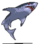
キラーシャーク青
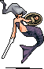
セイレーン青
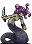
メデューサ青
急襲で先手を取り、魅了と石化で相手の行動を止める。
攻撃を受けるほど固くなり、反撃が伸びる型。長引かせて勝つ。
相性が良い特殊能力
- 相手から攻撃を受けた時に発動する能力
- 戦闘が長引いた場合に有利になる能力
- 防御力を増加させる能力
使用頻度 Tier
- 甲殻
- カウンター
- 大盾Ⅰ
- 大盾Ⅱ
- シールド
- 巨人
- 強気
- 禁呪
重複不可六角形の枠は重複不可。1体までにする。
相性が良いスキル
- 鉄壁
相性が良いタロット
- 皇帝
編成例
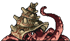
オクトパス青
シスター青
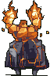
炎の巨人赤
甲殻とシールドで受けを固め、巨人の反撃でダメージを返す。
与えたダメージ量が発動条件になる型。1発を重くしてスタンや全体攻撃につなげる。
相性が良い特殊能力
- 相手に与えたダメージで発動する能力
- 相手に与えるダメージを増加させる能力
- 攻撃力に依存してダメージが増加する能力
- 攻撃力・速度を増加させる能力
使用頻度 Tier
- 威圧
- 号令
- 擬態
- 射撃
- トライデント
- 突撃
重複不可六角形の枠は重複不可。1体までにする。
相性が良いスキル
- 猛攻
- 撃滅
相性が良いタロット
- 力
- 愚者
編成例
カメレオン赤
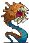
サンドワーム赤
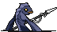
サハギン青
トライデントで開幕に防御を削り、擬態の初撃で威圧のスタンにつなげる。
クリティカル発生時に効果が乗る型。会心の回数がスタンと火力に変わる。
相性が良い特殊能力
- クリティカル発動時に発動する能力
使用頻度 Tier
- 願い事
- 渾身
- 精密攻撃
- 武器砕き
- 闘争心
重複不可六角形の枠は重複不可。1体までにする。
相性が良いスキル
- 会心
相性が良いタロット
- 運命の輪
- 正義
編成例
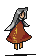
ブラウニー緑
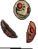
仮面緑
バット緑
願い事のスタンで相手を止めつつ、バリアと吸血で粘る。